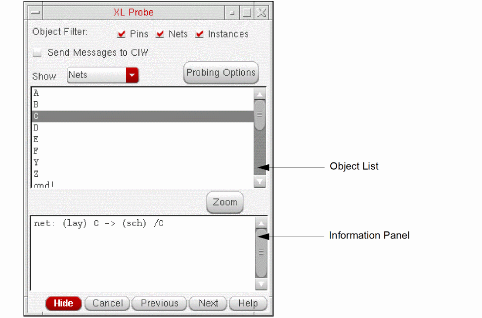

Probing Objects using the XL Probe Form
To probe an object from the XL Probe form,
-
From the layout window menu bar, choose Connectivity – XL Probe.
The XL Probe form is displayed.
 -
From the Show drop-down, choose the type of layout object you want to probe: Pins, Nets, Net Classes, or Instances.
The Object List is updated to show only layout objects of the specified type.
The Object Filter option has no effect on this list, only on probe creation by clicking in the layout or schematic window.
Here, CMX legacy net classes are listed in the XL Probe form but are not shown under the Net Class category in the Constraint Manager assistant. -
Choose the layout object you want to probe from the list.
Information on the probed object is printed to the Information Panel in the XL Probe form, the relevant object is highlighted in the layout window, and its schematic counterpart in the schematic window. - Adjust the behavior as required using the options on the form.
Related Topics
Return to top